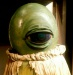
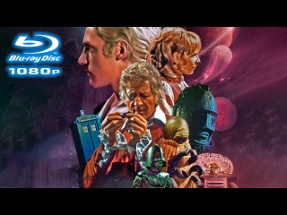
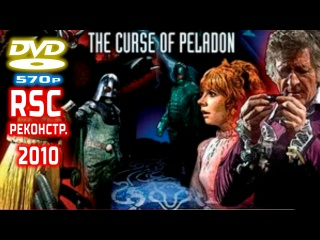
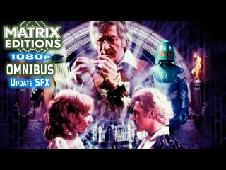
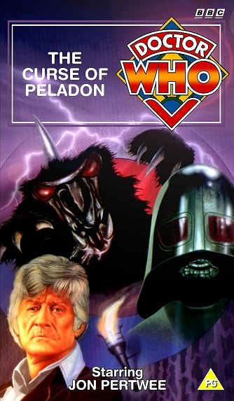
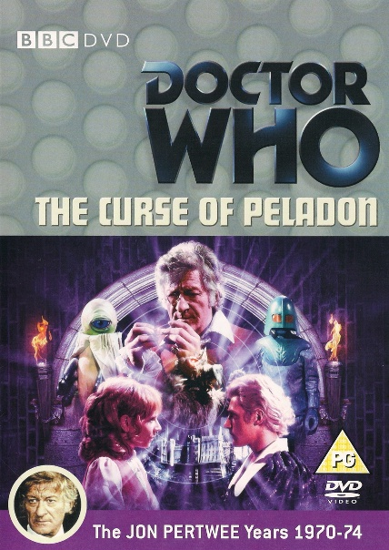
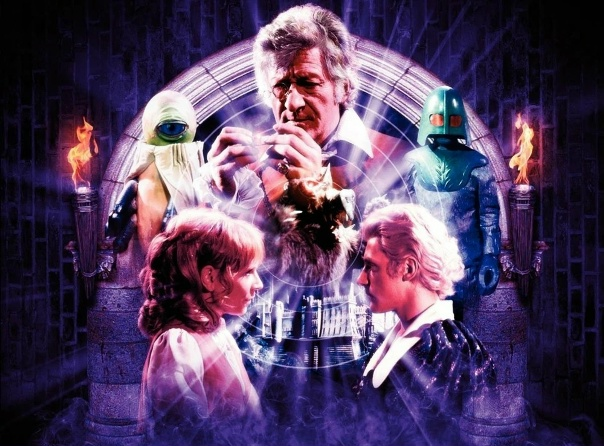
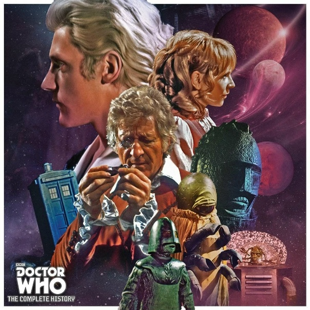
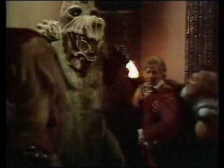

помощник
Субтитры: Русские {Дмитрий Корниенко} и Английские |  |
|---|---|
RSC реконструкция цвета, 2010 Субтитры: Русские {Дмитрий Корниенко} и Английские |  |
с обновлением визуальных эффектов (cunningmunki) Субтитры: отсутствуют |  |
| Все эпизоды найдены в 525-строчном формате NTSC в 1970-х годах * Цвет преобразован (PAL) |
|---|
|  помощник |
ТАРДИС доставляет Доктора и Джо на планету Пеладон, которая подаёт заявку на вступление в Галактическую Федерацию. Доктора принимают за земного делегата, а Джо выдаёт себя за принцессу. Делегаты других миров прибывают на оценку — Альфа Центавра, Арктур и двое Ледяных воинов, которых Доктор знает как давних врагов человечества. Но кто-то не хочет, чтобы Пеладон вступил в Федерацию: канцлер убит, а по коридорам бродит легендарное чудовище Аггедор. Примечательно, что Ледяные воины здесь впервые показаны не как враги, а как дипломаты — резкий поворот после их агрессивных появлений в эре Второго Доктора.
 VHS - август 1993 |  DVD+Boxset - 18 января 2010 |  Blu-ray - 20 марта 2023 * Версия в нашей группе |
|---|


